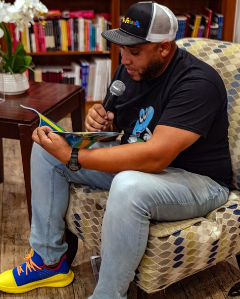
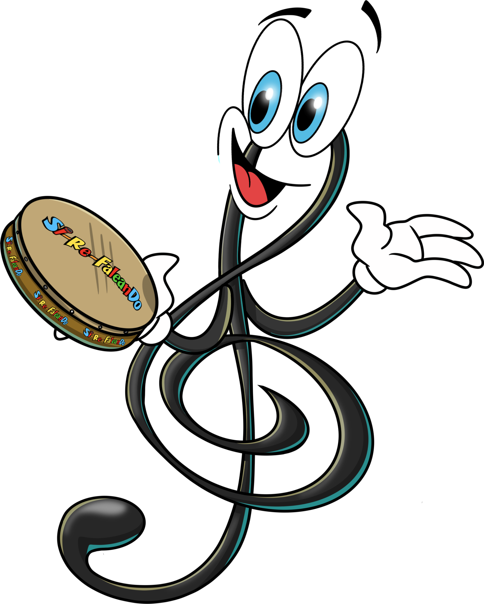

Nosotros
La historia detrás de Si-Re-FaleanDo
Si-Re-FaleanDo fue creado por Edwin Moreira, músico, educador y director musical puertorriqueño con una vida dedicada a enseñar, tocar, grabar y formar nuevos talentos. Su pasión por la educación musical infantil dio origen a un proyecto que combina aprendizaje, creatividad y diversión para acercar la música a niños y escuelas.
Leer biografía

Biografía del creador
Edwin Moreira, fundador y creador de Si-Re-FaleanDo
Edwin Moreira nació el 4 de octubre de 1982 en Fajardo, Puerto Rico. Incursionó en el mundo musical a la edad de 4 años, cuando comenzó a tomar sus primeras clases de guitarra. Su pasión por la música fue tan grande que sus padres decidieron matricularlo en la Escuela Libre de Música de Carolina.
A los 13 años comenzó a impartir sus primeras clases de música, motivado por su sueño de convertirse en maestro. A los 17 años inició su trayectoria como guitarrista profesional, participando junto a artistas como Raúl Burgos y Sergio Paul.
También comenzó a grabar jingles publicitarios para emisoras de radio como X-100 y Nueva Vida 97.7, entre otras.
A los 20 años ingresó a la Universidad Interamericana de Puerto Rico para cursar su bachillerato en música. Durante esta etapa inició su carrera como profesor en instituciones privadas, incluyendo el Instituto Cantizón.
A lo largo de su carrera ha trabajado con numerosos artistas locales e internacionales, entre ellos Pedro Capó, Melina León, Milly Quezada, Manny Manuel, Divino, Noriega, Vico C, Christian Daniel, Jencarlos Canela, Alexis y Fido, Wilfrido Vargas, Natti Natasha, Ricardo Rodríguez, Christine D’Clario, Farruko, Abraham Velázquez, Gilberto Santa Rosa, Darkiel, Jay Quiles y Jailene Cintrón entre otros.
Ha colaborado con diversas casas disqueras como director musical y fundó su propia escuela de música. En 2020 hizo realidad uno de sus mayores proyectos: el desarrollo del currículo musical Sí-Re-Fa-Leando, creado para enseñar música a niños de una manera dinámica y divertida.
El programa incluye libros de teoría, libros para colorear notas musicales, juegos educativos, música, flyers, tarjetas didácticas, stickers y su primer cuento infantil, Sire y la Gran Fiesta.
Todo el material ha sido diseñado para facilitar el aprendizaje musical y ayudar a los niños a desarrollar su talento de forma sencilla, práctica y entretenida.
A los 9 años entró en la Escuela Libre de Música. A la edad de 12 años su familia decidió mudarse al pueblo de Juncos. Allí comenzó a descubrir otros talentos y empezó a estudiar trombón, participando en la banda municipal del pueblo de Juncos y más tarde en la del municipio de Gurabo, donde terminó su Escuela Superior.
Sin dejar el instrumento con el cual había comenzado, a la edad de 17 años volvió a tomar clases de guitarra de manera privada. Dio sus primeros pasos como guitarrista con la agrupación Eco Celestiales, abriéndole puertas con diferentes ministerios. A los 19 años comenzó a dirigir su primera banda, la banda de Juan Ernesto Rivera.
Luego comenzó a tocar con la agrupación Getsemaní. Su ejecución musical causó buena impresión y empezaron a llamarlo diferentes intérpretes de la música sacra como Omaira Tollos, José González, Sergio Paul, Orlando Lozada, Raúl Burgos, Cristian Music, Respuesta, Frances Ortiz, Luis Alverio y Génesis.
A la edad de 20 años comenzó a grabar sencillos para X100, Nueva Vida y anuncios de televisión. También empezó a dar clases en su primera academia de música, López Music Academy, siguiendo su sueño de ser maestro de música y músico profesional. Desde pequeño ya daba clases en su iglesia, y con esa experiencia fue desarrollando paciencia con sus estudiantes para sacar lo mejor de ellos.
A los 21 años decidió estudiar el bachillerato de Música Popular en la Universidad Interamericana de Puerto Rico. Mientras estudiaba, decidió experimentar en el género del jazz y comenzó a tocar todos los fines de semana en la ciudad capital, San Juan.
Buscando seguir logrando su sueño, surgió una plaza en el Instituto Canción de Puerto Rico, donde fue aceptado. Actualmente da clases de guitarra, teoría y clases de conjunto. Allí comenzó una nueva etapa en su vida y tuvo la oportunidad de tocar con grandes exponentes de la música como Abraham Laboriel, Álvaro López, Banni Muñoz e ICZ Worship.
Mientras más experiencia adquiría, más crecían las bendiciones para su vida. Estando allí comenzó en el proyecto de una batucada que hoy se conoce como Batuqueadora. En ese proyecto tuvo la oportunidad de grabar guitarra, trombón y hacer coros.
Actualmente tiene su banda de jazz y ha tenido la oportunidad de acompañar a exponentes de la música como Laurie Colón, Lourdes Toledo, Javier Antonethie, Abraham Velázquez, el dúo Juanpa y Lenny, Christine D’Clario, Milka Velázquez, la banda de jazz de Rey Monruzo, Edgard René, Jorge Vizcarrondo, la banda de comedia Chuchin y Gufiao, Abimael, Ángeles de Barrio, Latin Continental, Grupo 24/7, Michael Rivera, Danny Berrios, Grupo Esencia, Danny Fuentes, Indiomar, Marta Gómez, Ricardo Rodríguez, Pedro Capó, Ángel y Chris, Michael Pra y El Bima.
Tuvo la oportunidad de trabajar con la casa disquera Luar Music Collective, donde se desempeñó como director musical del cantante de música urbana Divino. Gracias a esa oportunidad, también dirige el grupo de Samito y Esabdiel, ICZ Worship e Indiomar.
Ha tenido la oportunidad de grabar en varias producciones musicales: Jean Carlos Canela, Christian Daniel, Vivo C, Melina León, Farruko, Mucho Manolo, Darkiel, Baby Rasta y Gringo, Entre otras. También ha participado en 5 videos musicales.
Propósito
Crear herramientas para que los niños aprendan música con alegría
Si-Re-FaleanDo nace para apoyar a las escuelas con materiales, personajes, canciones, cuentos y recursos visuales que hacen la enseñanza musical más clara, divertida y accesible.
